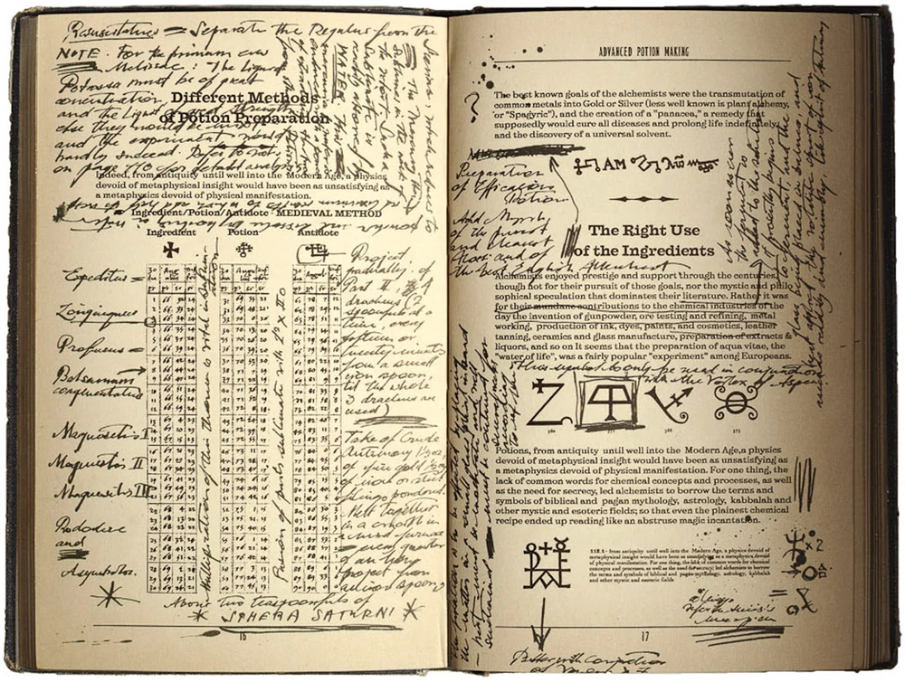

flowchart LR A(Watch lecture) --> B(Run lesson notebook) B --> C(Reproduce results) C --Different dataset--> C
Fred Guth
September 27, 2022
The Practical Deep Learning for Coders course has a top-down approach to teaching. Let’s not start from the basics, but from our goals. In the first lesson, you learn how to build a classifier that would be science fiction in 2015. Neat! Equally important, thought, is what is implicit: a requirement for a top-down approach to learning:
While running the lesson notebook, use doc(fn) to access the function’s documentation.
flowchart LR A(Watch lecture) --> B(Run lesson notebook) B --> C(Reproduce results) C --Different dataset--> C
A cookbook is a collection of recipes. A fastai recipe is a jupyter notebook where you compile steps that you can follow to reproduce a result using the library. But you do that in a literate programming style, ie you add explanations and annotations to the code.
Many fastai cookbooks use the name playground.
There are a list of some interesting fast.ai cookbooks in Github:

A cookbook enables reproducibility, but as important… it allows you to come back to your work in a few months and understand what you did. It is a gift for your future self.
flowchart LR A(Watch lecture) --> B(Run lesson notebook) B --> C(Reproduce) C --Different dataset--> C C --> D(Share learnings) D:::someclass classDef someclass fill:#f96;
Besides, when you share your learnings you need to structure your thought and that makes you check for gaps in your understanding and solidifies what you have learned.
The best way to document your fastai learnings is using nbdev, which is the development tool used to build and document fast.ai lib itself. That is how this Fred's fast.ai cookbook was made. You can just fork my repo or follow the nbdev tutorial (that is what I did).